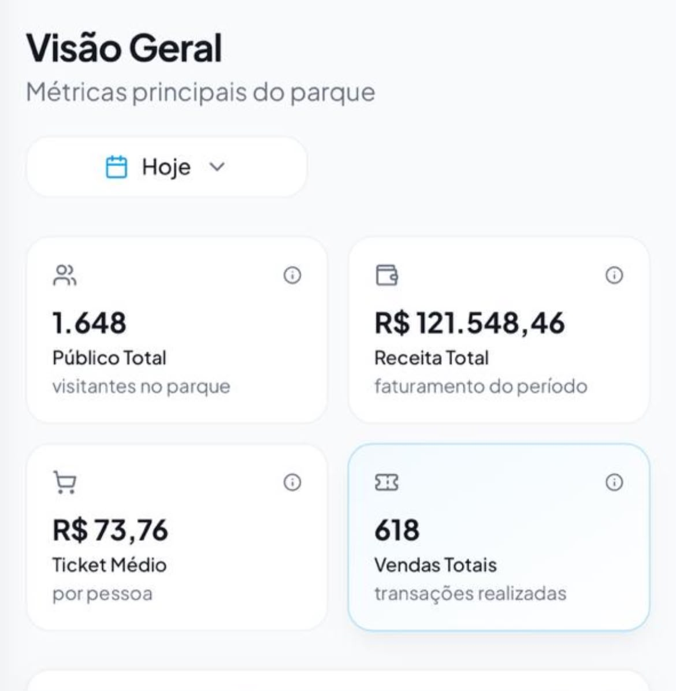
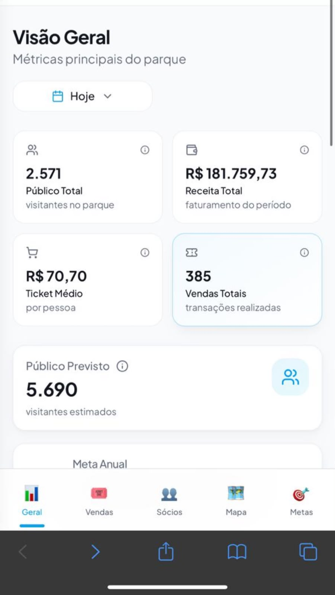
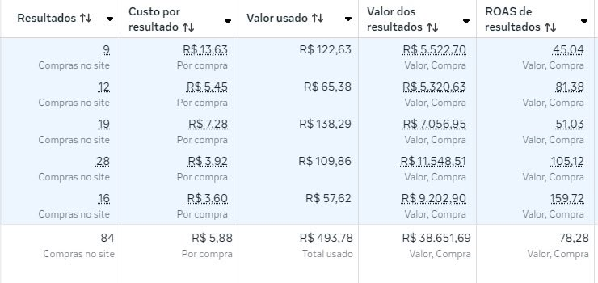
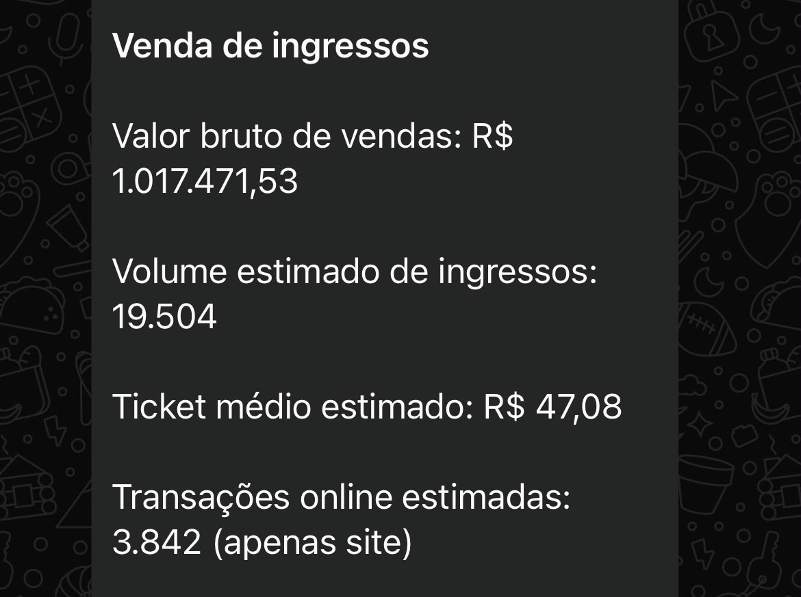
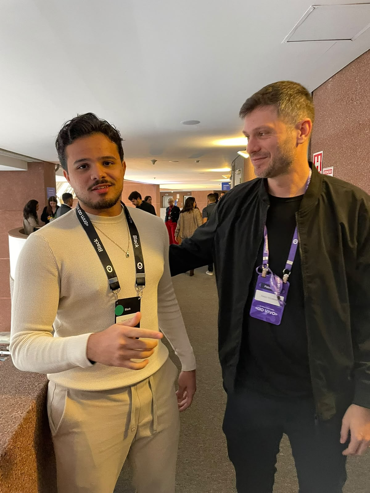

Como eu faço empresas venderem mais pelo WhatsApp com os mesmos leads usando uma Barreira de Qualificação
E é exatamente isso que eu vou desenhar para a sua empresa em até 72 horas.
Eu vou analisar como seus contatos chegam hoje e te mostrar:
- o que precisa ser perguntado antes do atendimento
- como identificar quem tem mais chance de comprar
- como separar leads quentes, mornos e frios
- o que a inteligência artificial deve fazer antes do vendedor
- como fazer cada oportunidade chegar mais preparada para comprar no WhatsApp
Eu desenvolvi essa visão estruturando operações em que milhares de vendas foram conduzidas pelo WhatsApp.
Eu sei que você chegou até aqui pelo meu perfil. Então vou direto ao ponto.
O anúncio trazia o contato. O call center conduzia a conversa pelo WhatsApp. A pessoa tirava dúvidas, entendia a oferta e avançava. O pagamento era concluído no site. A venda era conduzida pelo WhatsApp.
Foi estruturando essas operações que eu percebi o tamanho do dinheiro que uma empresa pode ganhar quando sabe receber, entender e conduzir cada lead.
Também percebi o tamanho do rombo quando isso não acontece.
Continue lendo. Em poucos minutos, você vai entender onde sua empresa pode estar deixando dinheiro na mesa.
Meu trabalho começou a abrir portas dentro do mercado digital
Eu construí minha experiência dentro de operações reais. Tráfego. Funis. Call center. Atendimento. WhatsApp. Venda. Acompanhamento de CAC, ROAS, faturamento e volume.
Com o tempo, os resultados começaram a me levar para outros ambientes. Passei a frequentar eventos importantes, conversar com grandes operadores e compartilhar como eu estruturava os funis que estavam gerando resultado.
Meu trabalho passou a ser reconhecido pela forma como eu conectava aquisição, página, atendimento, WhatsApp, call center, oferta e venda.





Eu acompanhei o caminho inteiro.
Foi assim que eu desenvolvi a lógica que aplico hoje.
O WhatsApp pode ser o seu melhor canal de vendas ou o lugar onde seus melhores leads morrem
Quando entram poucos contatos, quase qualquer atendimento parece funcionar. Você responde um por um, faz algumas perguntas, volta em algumas conversas, esquece outras e continua vendendo.
O aumento do volume revela a bagunça.
- Mais leads entram.
- Mais mensagens ficam paradas.
- Mais curiosos ocupam a equipe.
- Mais compradores esperam.
- Mais dinheiro entra nos anúncios.
- O faturamento cresce abaixo do potencial.
Eu vi empresas com bons anúncios desperdiçarem dinheiro dentro do WhatsApp. Também vi operações venderem muito mais quando começaram a usar contexto, prioridade e processo.
O concorrente pode gerar menos leads que você e ganhar mais dinheiro. Basta ele vender melhor pelo WhatsApp.
Não adianta encher o funil quando o dinheiro continua escapando no WhatsApp.
Hoje, sua empresa pode estar pagando duas vezes pelo mesmo lead
Você paga para o anúncio gerar o contato. Depois, paga sua equipe para descobrir se aquele contato merece atenção.
A pessoa chega ao WhatsApp com uma mensagem simples:
Por trás dessas mensagens existem pessoas completamente diferentes. Uma está pesquisando. Outra compara preço. Outra não possui perfil. Outra tem urgência. Outra está pronta para comprar.
Sua equipe precisa descobrir:
- quem é
- o que procura
- qual problema precisa resolver
- se possui perfil
- se existe urgência
- se pode comprar
- se merece prioridade
Você paga para gerar o lead e continua pagando enquanto sua equipe tenta descobrir o que fazer com ele.
Faça a conta do que essa bagunça pode estar custando
Uma empresa investe R$ 5 mil por mês em anúncios e gera 200 leads.
A equipe recebe todos praticamente da mesma maneira. O vendedor passa horas fazendo perguntas básicas. Os contatos com mais potencial esperam no meio da fila.
E essa conta considera apenas duas oportunidades.
Dinheiro desperdiçado no anúncio
Você paga para gerar o contato e perde valor depois que ele entra.
Vendedor caro fazendo triagem
Parte do tempo comercial é usada para repetir perguntas básicas.
Comprador esperando
O lead com urgência disputa atenção com pessoas que nunca vão avançar.
Crescimento mais caro
A empresa contrata mais gente para sustentar uma entrada bagunçada.
- aumenta o tráfego sem organizar o WhatsApp
- deixa o vendedor começar toda conversa do zero
- atende comprador e curioso com a mesma prioridade
- demora para responder quem já está pronto
- compra ferramenta antes de desenhar o processo
- aceita a frase “o lead era ruim” sem investigar a conversa
Se sua empresa vende pelo WhatsApp e atende todo mundo igual, você está pagando caro para vender abaixo do seu potencial.
IA no WhatsApp sem lógica comercial vira um robô enchendo o saco do lead
Eu trabalho com inteligência artificial e conheço o que ela pode fazer dentro de uma operação comercial.
Uma IA bem orientada pode fazer perguntas importantes, organizar respostas, identificar sinais de compra, preparar a conversa, entregar contexto para o vendedor e chamar o humano no momento certo.
Ela precisa saber o que perguntar, quais respostas importam, o que muda a prioridade, quando continuar, quando transferir e o que entregar ao vendedor.
Colocar IA em uma operação bagunçada não resolve porra nenhuma. A bagunça só ganha velocidade.
IA sem estratégia
- pergunta qualquer coisa
- cria conversas longas
- não sabe priorizar
- manda contato ruim
- segura bons leads
- irrita compradores
IA com estratégia
- faz perguntas certas
- identifica sinais de compra
- organiza o contexto
- classifica os contatos
- prepara a conversa
- chama o humano na hora certa
A ferramenta executa.
A estratégia define o que precisa ser executado.
É essa estratégia que eu desenho.
Eu desenho a entrada que prepara o lead para comprar pelo WhatsApp
Eu começo olhando para o que sua empresa já possui. O anúncio. A página. O formulário. O quiz. O caminho até o WhatsApp. As mensagens iniciais. As perguntas feitas pela equipe.
Depois, organizo os sinais que indicam interesse, urgência e capacidade de compra em uma sequência simples.
O vendedor começa a conversa sabendo quem está do outro lado e por que aquela oportunidade merece atenção.
Agora eu posso desenhar essa estrutura para a sua empresa
Mapa da Barreira de Qualificação
Você me mostra como seus leads chegam hoje. Eu analiso sua entrada, identifico os pontos cegos e desenho o caminho que esses contatos deveriam percorrer antes de chegar ao vendedor.
A entrega acontece em até 72 horas depois que eu recebo os materiais necessários.
MAPA DA
BARREIRA DE
QUALIFICAÇÃO
LEAD PRONTO™Análise da entrada atual
Eu mostro onde sua empresa perde contexto, tempo e dinheiro.
Perguntas de qualificação
Eu defino o que cada lead precisa revelar.
Modelo de pontuação
Eu crio uma lógica simples de prioridade.
Classificação dos leads
Eu separo contatos quentes, mornos e frios.
Roteiro inicial da IA
Eu desenho o que ela pode perguntar, responder e organizar.
Plano de correção
Eu entrego as mudanças necessárias e a ordem dos próximos passos.
- estudar IA
- criar a lógica sozinho
- passar horas pensando em perguntas
- escolher uma ferramenta no escuro
Eu estudo sua operação. Eu desenho o processo.
Você recebe o mapa visual, os critérios, a pontuação, o roteiro inicial, a ordem de implementação e um vídeo explicativo.Um desenho claro do que precisa ser ajustado para vender melhor pelo WhatsApp.
Uma venda melhor aproveitada pode pagar todo o Mapa
O impacto depende da sua oferta, do volume de leads, da equipe e da velocidade de aplicação. A conta continua simples.
Representa mais de quatro vezes o valor à vista do Mapa.
Representa mais de seis vezes o valor à vista do Mapa.
Representa mais de dez vezes o valor à vista do Mapa.
Se R$ 49 por mês parece muito dinheiro para sua empresa, este trabalho ainda não é para você.
Eu quero trabalhar com empresários que:
- já investem em anúncios
- já recebem contatos pelo WhatsApp
- possuem uma operação funcionando
- sentem urgência para corrigir o comercial
- conseguem aplicar o que eu entregar
- entendem o valor de uma venda recuperada
Eu não quero convencer você a gastar um dinheiro que vai fazer falta. Quero olhar para empresas que já possuem demanda e precisam aproveitar melhor o que está chegando.
Você já paga para o lead chegar. Agora precisa vender melhor pelo WhatsApp com o que já gera.
Eu já estruturei operações em que milhares de vendas foram conduzidas pelo WhatsApp. Já trabalhei com tráfego, funil, call center, atendimento e venda.
Acompanhei o caminho entre o clique, a conversa e o pagamento. Meu trabalho me levou para eventos, gravações e ambientes com grandes operadores do mercado digital.
Agora eu quero usar essa experiência para olhar para sua empresa.
Em até 72 horas, eu vou te mostrar:
- o que seus leads precisam responder
- como interpretar as respostas
- como criar uma pontuação
- como separar contatos quentes, mornos e frios
- quem merece atenção primeiro
- o que a IA pode fazer
- quando o vendedor precisa entrar
- o que precisa ser corrigido para vender melhor pelo WhatsApp
Você me mostra como sua operação funciona hoje.
Eu te mostro como ela deveria funcionar para aproveitar melhor os leads e vender mais pelo WhatsApp.
Ao tocar no botão, você vai falar diretamente comigo pelo WhatsApp.